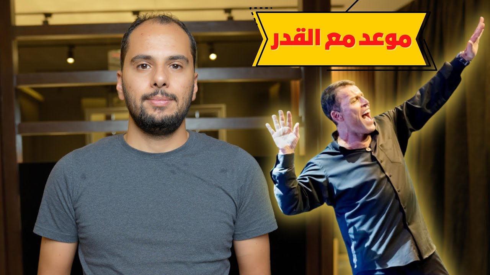

كانوا هنا
انتوني روبنز - موعد مع القدر
سيرة Tony Robbins زي ما اتوثّقت: بيت صعب، وشغل كعامل نظافة، ومحاضرة لـJim Rohn غيّرت نظرته للحياة، ومشي على الفحم، وبرنامج عملت عنه Netflix فيلم.

شغّل الحلقةAnthony Robbins هو الساحر اللي خلّى الناس تمشي على الفحم وهو مولّع من غير ما يحسوا بألم، والشخص اللي مش بس عمل تحولات كبيرة في حياته، ده كمان ساعد مئات الآلاف من الناس، إن ما كانش الملايين، علشان يعملوا تحولات كبيرة في حياتهم. في المقال ده هنشوف إزاي غيّر حياته من شخص يائس لمصدر أمل لناس كتيرة، وهنفصل بين القصة اللي حكيتها عنه في الحلقة واللي اتوثّق فعلًا عن حياته.
طفولة Tony Robbins كانت عاملة إزاي؟ 1:24
Anthony Robbins اتولد في California يوم 29 فبراير 1960.1 وبغض النظر عن مكان ويوم ميلاده، يبدو إن طفولته ما كانتش طبيعية: نشأ في أسرة مفككة نتيجة غياب دور الأب، وكان فيه مشاكل كتير بين والده ووالدته، لحد ما انفصلوا وهو عنده 7 سنين.1
والدته كمان كانت بتعاني، واتجوزت أكتر من مرة، ومن الجوازات دي جوازها من Jim Robbins (جيم روبنز)، واحد من لعيبة الـbaseball، واللي كان مهتم جدًا بـTony.1
قصة الراجل العجوز: إيه اللي اتوثّق فعلًا؟ 1:53
لما Tony كان عنده 17 سنة، كان لازم يسيب بيت والدته ويبتدي يعتمد على نفسه.12 وفي الحلقة حكيت إنه دخل بعدها في فترة صعبة جدًا وحاول ينتحر، وإن راجل عجوز بيته مليان كتب أنقذه وغيّر طريقة تفكيره، وحكيت القصة دي كأنها حصلت فعلًا.
لكن ما لقيتلهاش أي أصل في سيرته المنشورة. اللي اتوثّق فعلًا إن والدته طردته من البيت وهو عنده 17 سنة، واشتغل عامل نظافة، وهو نفسه بيقول إن اللي غيّر نظرته للحياة كان محاضرة لـJim Rohn حضرها وهو في السن ده.23 يعني نقطة التحول اللي Robbins بيحكيها بنفسه كانت محاضرة.
ومش هضحك عليك وأقولك إن التغيير كان سهل؛ ده كان صعب وأخد معاه وقت كتير.
ملحوظة مش من الحلقة: لو بتفكر إنك تأذي نفسك، كلّم حد تثق فيه دلوقتي، ولو إنت في خطر اتصل بالطوارئ في بلدك.
إزاي Jim Rohn غيّر طريق Tony Robbins؟ 3:19
الحاجة اللي ما أخدتش مع Tony وقت خالص هي أحلامه. كان بيشتغل عامل نظافة في واحدة من البنايات الكبيرة، وكان بيحلم يكون عنده مكتب فيها.13 وكمان كان بيعاني من زيادة الوزن، ونفسه يتمتع بصحة وجسم مثالي.2
في الفترة دي تحديدًا اكتشف موهبته: إنه بيقدر يحفز الناس، ويعرف يوصّل لهم الأفكار بطريقة مبتكرة. فقرر يسيب شغله ويروح لمجال أقرب لموهبته، علشان يقابل واحد من أشهر المتحدثين التحفيزيين وقتها: Jim Rohn. وبدأ يشتغل معاه في تنظيم لقاءاته ومحاضراته.13
والفترة دي أكسبته مهارات كتير، خلّته بعد كده ينظم ندواته الخاصة، واللي حققت نجاح كبير جدًا، خصوصًا بعد تجربة المشي على النار.
المشي على الفحم: سحر ولا فيزياء؟ 3:54
في تجربة المشي على النار، Robbins بيساعد الحضور إنهم يمشوا على طبقة من الفحم المشتعل. وهو بيأكد إن التجربة دي مش الهدف منها الشو؛ الهدف الأساسي إنه يقنع الحضور إنهم يقدروا يعملوا أي حاجة، وإن كانوا قدروا يمشوا على النار، يبقى هيقدروا يتغيروا فعلًا.
والمشي على النار مش اختراع جديد؛ هو منسوخ من طقوس دينية لبعض العقائد المنتشرة في العالم.4 بعضها كان بيستخدم الطقس ده علشان يحكم على شخص إن كان مذنب أو بريء: لو عدّى على النار من غير ما يتأذي، يبقى مش مذنب.5 وفي معتقدات تانية بيكون اختبار لقوة الإيمان: لو إيمانك قوي، هتمشي على الفحم من غير ما تتلسع.4
والمشي على الفحم نفسه حقيقي ومش خدعة، وتفسيره فيزيائي (تفاصيله في التصحيحات تحت).4 لكن مهما كان رأيك في التجربة، ما نقدرش ننكر تأثير Robbins على ملايين البشر حول العالم.
إيه هو برنامج Date with Destiny؟ 4:33
بيتقال إن عدد الناس اللي Robbins أثّر فيهم وصل لحوالي 50 مليون شخص.6 ومن أشهر برامجه برنامج اسمه Date with Destiny (موعد مع القدر)، مدته 6 أيام، وبيحضره حوالي 2,500 شخص، وكتير منهم بيخرجوا مختلفين وبيعملوا تحولات كبيرة في حياتهم.6
وده اللي خلّى Netflix تنتج فيلم وثائقي عن البرنامج ده تحديدًا، Tony Robbins: I Am Not Your Guru (توني روبنز: أنا مش المرشد بتاعك)، عرض فيه تأثير Robbins على الحضور، وتحديدًا على أكتر من شخص كانوا بيفكروا في الانتحار، وحضروا البرنامج كفرصة أخيرة بيدّوها لنفسهم.67 ومن أشهر القصص اللي في الفيلم واحدة باعت كل حاجة تملكها، حتى عفش بيتها، علشان تحضر البرنامج، وقصتها والمعاناة اللي مرت بيها خلّت Robbins يقرر يساعدها تتخطاها.8
إيه السر في نجاح Tony Robbins؟ 5:32
Robbins مش بيكتفي بمساعدة الناس من خلال تحفيزهم وتغيير تفكيرهم، ده كمان من خلال مؤسسته الخيرية، اللي بتساعد عدد كبير من المساجين، بالإضافة لتوفير الطعام لملايين من البشر.1
فببساطة كده، Robbins نجح لأنه غيّر نظرته للحياة، وبقى عنده هدف ورسالة، ورسالته كانت إنه يساعد أكبر عدد من الناس. وعلشان يكون مؤهل لده، درس وطوّر من نفسه، واختبر بنفسه تأثير الطرق اللي بيدرّسها، ولما نجحت معاه شاركها مع غيره.
Robbins ما اخترعش حاجة جديدة، هو بس طبّق القانون القديم اللي بيقول إن نجاحك المالي أو الشخصي، أو أي نجاح في الدنيا، بيتقاس بالقيمة اللي إنت بتضيفها لنفسك أو لغيرك. فلو هنصحك بنصيحة النهارده، هقولك: طوّر نفسك في أي حاجة إنت بتحبها، وحاول تستخدمها في إضافة قيمة للناس، وساعتها مفيش حاجة في الدنيا هتقف قدام نجاحك.
فصول الحلقة
أسئلة شائعة
Tony Robbins اتولد إمتى وفين؟
Anthony Robbins اتولد في California يوم 29 فبراير 1960.
إيه اللي غيّر حياة Tony Robbins؟
بحسب Robbins نفسه، نقطة التحول كانت محاضرة لـJim Rohn حضرها وهو عنده 17 سنة، بعد ما ساب بيت والدته واشتغل عامل نظافة.
ليه Robbins بيخلّي الناس تمشي على الفحم؟
بحسب Robbins، التجربة مش الهدف منها الشو؛ الهدف إنه يقنع الحضور إنهم يقدروا يعملوا أي حاجة. وإن كانوا قدروا يمشوا على النار، يبقى هيقدروا يتغيروا فعلًا.
إيه هو برنامج Date with Destiny؟
من أشهر برامج Robbins، ومدته 6 أيام. وNetflix عملت عنه فيلم وثائقي عرض تأثيره على الحضور.
تصحيحات
- حكيت قصة إن Tony Robbins حاول ينتحر وهو شاب، وإن راجل عجوز مليان بيته كتب أنقذه وغيّر تفكيره، وحكيتها كأنها حصلت فعلًا، ونسبت له كمان جملة «لولا العجوز اللي ساعدني». ما لقيتش للقصة دي ولا للجملة دي أي أصل في سيرته المنشورة؛ الثابت إن والدته طردته من البيت وهو عنده 17 سنة، واشتغل عامل نظافة، وهو نفسه بيقول إن اللي غيّر حياته كان محاضرة لـJim Rohn حضرها في السن ده.23
- قلت إن أهله انفصلوا وهو عنده 6 سنين؛ الصحيح إنه كان عنده 7 سنين.1
- قلت إنه كان بيشتغل حارس في واحدة من البنايات الكبيرة؛ الصحيح إنه كان بيشتغل عامل نظافة (janitor).13
- قلت إن برنامج Date with Destiny بيحضره حوالي 2000 شخص؛ الرقم اللي اتنشر عن الدورة اللي اتصور فيها فيلم Netflix هو 2,500 شخص.6
- قلت «بغض النظر إن كان المشي على النار حقيقي ولا فيه خدعة». هو حقيقي ومش خدعة، ومش محتاج قوة خارقة ولا إيمان ولا «قوة عقل»: الفحم موصّل ضعيف جدًا للحرارة، والرجل بتلمسه وقت قصير، فالحرارة اللي بتوصل للجلد قليلة. ومع ذلك فيه ناس بتتحرق فعلًا، فدي مش تجربة آمنة تجرّبها لوحدك.4
- قلت إن Robbins بينظم ندوات في الاستاد وإن الحضور بيوصل أحيانًا لـ100 ألف، وقلت إن البنت اللي باعت عفشها بقت متحدثة تحفيزية في البرازيل. ما لقيتش مصدر للاستاد ولا للـ100 ألف؛ واللي في الفيلم إن Robbins وعد واحدة من الحاضرات اتربت في البرازيل إنه يساعدها تبقى مصدر إلهام لغيرها، لكن ما لقيتش إن ده حصل، ولا إنها نفس اللي باعت عفشها. فشلت المعلومتين من المقال.7
المصادر
- en.wikipedia.org https://en.wikipedia.org/wiki/Tony_Robbins
- theglobeandmail.com https://theglobeandmail.com/life/a-self-help-made-man/article1333572
- aol.com https://aol.com/world-famous-speaker-tony-robbins-122216701.html
- en.wikipedia.org https://en.wikipedia.org/wiki/Firewalking
- en.wikipedia.org https://en.wikipedia.org/wiki/Trial_by_ordeal
- fortune.com https://fortune.com/2016/03/14/tony-robbins-netflix-documentary
- insidehook.com https://www.insidehook.com/advice/tony-robbins-doc-life-hacks
- newsweek.com https://www.newsweek.com/tony-robbins-i-am-not-your-guru-netflix-481075